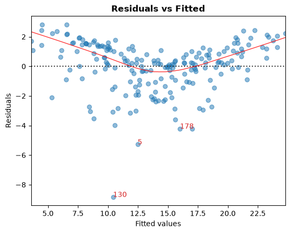
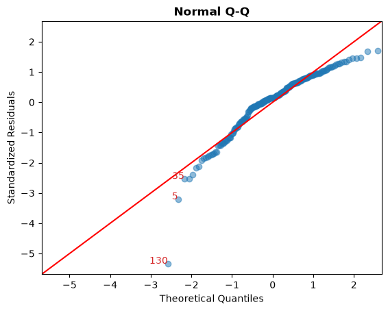
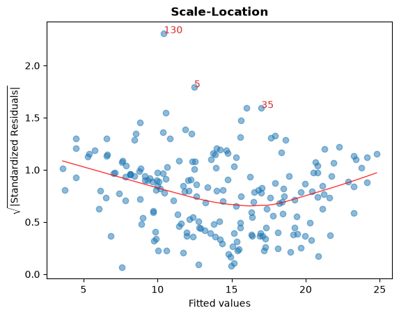
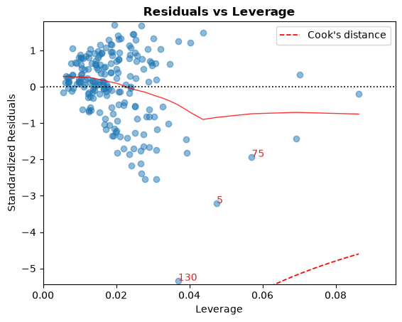
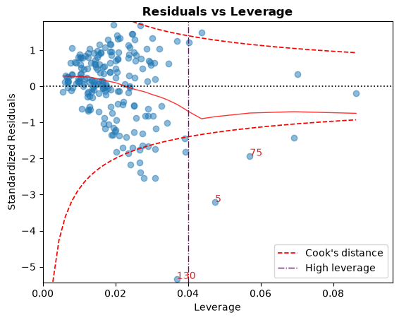
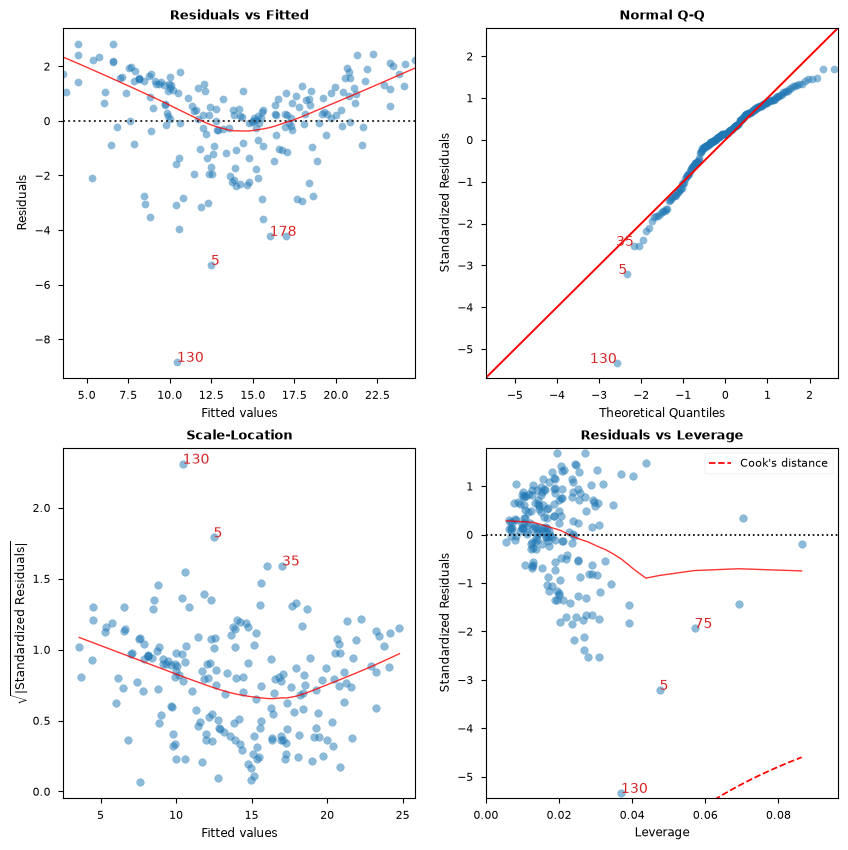

Linear regression diagnostics#
In real-life, relation between response and target variables are seldom linear. Here, we make use of outputs of statsmodels to visualise and identify potential problems that can occur from fitting linear regression model to non-linear relation. Primarily, the aim is to reproduce visualisations discussed in Potential Problems section (Chapter 3.3.3) of An Introduction to Statistical Learning (ISLR) book by James et al., Springer.
[1]:
import statsmodels
import statsmodels.formula.api as smf
import pandas as pd
Simple multiple linear regression#
Firstly, let us load the Advertising data from Chapter 2 of ISLR book and fit a linear model to it.
[2]:
# Load data
data_url = "https://raw.githubusercontent.com/nguyen-toan/ISLR/07fd968ea484b5f6febc7b392a28eb64329a4945/dataset/Advertising.csv"
df = pd.read_csv(data_url).drop("Unnamed: 0", axis=1)
df.head()
[2]:
| TV | Radio | Newspaper | Sales | |
|---|---|---|---|---|
| 0 | 230.1 | 37.8 | 69.2 | 22.1 |
| 1 | 44.5 | 39.3 | 45.1 | 10.4 |
| 2 | 17.2 | 45.9 | 69.3 | 9.3 |
| 3 | 151.5 | 41.3 | 58.5 | 18.5 |
| 4 | 180.8 | 10.8 | 58.4 | 12.9 |
[3]:
# Fitting linear model
res = smf.ols(formula="Sales ~ TV + Radio + Newspaper", data=df).fit()
res.summary()
[3]:
| Dep. Variable: | Sales | R-squared: | 0.897 |
|---|---|---|---|
| Model: | OLS | Adj. R-squared: | 0.896 |
| Method: | Least Squares | F-statistic: | 570.3 |
| Date: | Tue, 23 Jun 2026 | Prob (F-statistic): | 1.58e-96 |
| Time: | 10:36:01 | Log-Likelihood: | -386.18 |
| No. Observations: | 200 | AIC: | 780.4 |
| Df Residuals: | 196 | BIC: | 793.6 |
| Df Model: | 3 | ||
| Covariance Type: | nonrobust |
| coef | std err | t | P>|t| | [0.025 | 0.975] | |
|---|---|---|---|---|---|---|
| Intercept | 2.9389 | 0.312 | 9.422 | 0.000 | 2.324 | 3.554 |
| TV | 0.0458 | 0.001 | 32.809 | 0.000 | 0.043 | 0.049 |
| Radio | 0.1885 | 0.009 | 21.893 | 0.000 | 0.172 | 0.206 |
| Newspaper | -0.0010 | 0.006 | -0.177 | 0.860 | -0.013 | 0.011 |
| Omnibus: | 60.414 | Durbin-Watson: | 2.084 |
|---|---|---|---|
| Prob(Omnibus): | 0.000 | Jarque-Bera (JB): | 151.241 |
| Skew: | -1.327 | Prob(JB): | 1.44e-33 |
| Kurtosis: | 6.332 | Cond. No. | 454. |
Notes:
[1] Standard Errors assume that the covariance matrix of the errors is correctly specified.
Diagnostic Figures/Table#
In the following first we present a base code that we will later use to generate following diagnostic plots:
a. residual
b. qq
c. scale location
d. leverage
and a table
a. vif
[4]:
# base code
import numpy as np
import seaborn as sns
from statsmodels.tools.tools import maybe_unwrap_results
from statsmodels.graphics.gofplots import ProbPlot
from statsmodels.stats.outliers_influence import variance_inflation_factor
import matplotlib.pyplot as plt
from typing import Type
style_talk = "seaborn-talk" # refer to plt.style.available
class LinearRegDiagnostic:
"""
Diagnostic plots to identify potential problems in a linear regression fit.
Mainly,
a. non-linearity of data
b. Correlation of error terms
c. non-constant variance
d. outliers
e. high-leverage points
f. collinearity
Authors:
Prajwal Kafle (p33ajkafle@gmail.com, where 3 = r)
Does not come with any sort of warranty.
Please test the code one your end before using.
Matt Spinelli (m3spinelli@gmail.com, where 3 = r)
(1) Fixed incorrect annotation of the top most extreme residuals in
the Residuals vs Fitted and, especially, the Normal Q-Q plots.
(2) Changed Residuals vs Leverage plot to match closer the y-axis
range shown in the equivalent plot in the R package ggfortify.
(3) Added horizontal line at y=0 in Residuals vs Leverage plot to
match the plots in R package ggfortify and base R.
(4) Added option for placing a vertical guideline on the Residuals
vs Leverage plot using the rule of thumb of h = 2p/n to denote
high leverage (high_leverage_threshold=True).
(5) Added two more ways to compute the Cook's Distance (D) threshold:
* 'baseR': D > 1 and D > 0.5 (default)
* 'convention': D > 4/n
* 'dof': D > 4 / (n - k - 1)
(6) Fixed class name to conform to Pascal casing convention
(7) Fixed Residuals vs Leverage legend to work with loc='best'
"""
def __init__(
self,
results: Type[statsmodels.regression.linear_model.RegressionResultsWrapper],
) -> None:
"""
For a linear regression model, generates following diagnostic plots:
a. residual
b. qq
c. scale location and
d. leverage
and a table
e. vif
Args:
results (Type[statsmodels.regression.linear_model.RegressionResultsWrapper]):
must be instance of statsmodels.regression.linear_model object
Raises:
TypeError: if instance does not belong to above object
Example:
>>> import numpy as np
>>> import pandas as pd
>>> import statsmodels.formula.api as smf
>>> x = np.linspace(-np.pi, np.pi, 100)
>>> y = 3*x + 8 + np.random.normal(0,1, 100)
>>> df = pd.DataFrame({'x':x, 'y':y})
>>> res = smf.ols(formula= "y ~ x", data=df).fit()
>>> cls = Linear_Reg_Diagnostic(res)
>>> cls(plot_context="seaborn-v0_8-paper")
In case you do not need all plots you can also independently make an individual plot/table
in following ways
>>> cls = Linear_Reg_Diagnostic(res)
>>> cls.residual_plot()
>>> cls.qq_plot()
>>> cls.scale_location_plot()
>>> cls.leverage_plot()
>>> cls.vif_table()
"""
if (
isinstance(
results, statsmodels.regression.linear_model.RegressionResultsWrapper
)
is False
):
raise TypeError(
"result must be instance of statsmodels.regression.linear_model.RegressionResultsWrapper object"
)
self.results = maybe_unwrap_results(results)
self.y_true = self.results.model.endog
self.y_predict = self.results.fittedvalues
self.xvar = self.results.model.exog
self.xvar_names = self.results.model.exog_names
self.residual = np.array(self.results.resid)
influence = self.results.get_influence()
self.residual_norm = influence.resid_studentized_internal
self.leverage = influence.hat_matrix_diag
self.cooks_distance = influence.cooks_distance[0]
self.nparams = len(self.results.params)
self.nresids = len(self.residual_norm)
def __call__(self, plot_context="seaborn-v0_8-paper", **kwargs):
# print(plt.style.available)
# GH#9157
if plot_context not in plt.style.available:
plot_context = "default"
with plt.style.context(plot_context):
fig, ax = plt.subplots(nrows=2, ncols=2, figsize=(10, 10))
self.residual_plot(ax=ax[0, 0])
self.qq_plot(ax=ax[0, 1])
self.scale_location_plot(ax=ax[1, 0])
self.leverage_plot(
ax=ax[1, 1],
high_leverage_threshold=kwargs.get("high_leverage_threshold"),
cooks_threshold=kwargs.get("cooks_threshold"),
)
plt.show()
return (
self.vif_table(),
fig,
ax,
)
def residual_plot(self, ax=None):
"""
Residual vs Fitted Plot
Graphical tool to identify non-linearity.
(Roughly) Horizontal red line is an indicator that the residual has a linear pattern
"""
if ax is None:
fig, ax = plt.subplots()
sns.residplot(
x=self.y_predict,
y=self.residual,
lowess=True,
scatter_kws={"alpha": 0.5},
line_kws={"color": "red", "lw": 1, "alpha": 0.8},
ax=ax,
)
# annotations
residual_abs = np.abs(self.residual)
abs_resid = np.flip(np.argsort(residual_abs), 0)
abs_resid_top_3 = abs_resid[:3]
for i in abs_resid_top_3:
ax.annotate(i, xy=(self.y_predict[i], self.residual[i]), color="C3")
ax.set_title("Residuals vs Fitted", fontweight="bold")
ax.set_xlabel("Fitted values")
ax.set_ylabel("Residuals")
return ax
def qq_plot(self, ax=None):
"""
Standarized Residual vs Theoretical Quantile plot
Used to visually check if residuals are normally distributed.
Points spread along the diagonal line will suggest so.
"""
if ax is None:
fig, ax = plt.subplots()
QQ = ProbPlot(self.residual_norm)
fig = QQ.qqplot(line="45", alpha=0.5, lw=1, ax=ax)
# annotations
abs_norm_resid = np.flip(np.argsort(np.abs(self.residual_norm)), 0)
abs_norm_resid_top_3 = abs_norm_resid[:3]
for i, x, y in self.__qq_top_resid(
QQ.theoretical_quantiles, abs_norm_resid_top_3
):
ax.annotate(i, xy=(x, y), ha="right", color="C3")
ax.set_title("Normal Q-Q", fontweight="bold")
ax.set_xlabel("Theoretical Quantiles")
ax.set_ylabel("Standardized Residuals")
return ax
def scale_location_plot(self, ax=None):
"""
Sqrt(Standarized Residual) vs Fitted values plot
Used to check homoscedasticity of the residuals.
Horizontal line will suggest so.
"""
if ax is None:
fig, ax = plt.subplots()
residual_norm_abs_sqrt = np.sqrt(np.abs(self.residual_norm))
ax.scatter(self.y_predict, residual_norm_abs_sqrt, alpha=0.5)
sns.regplot(
x=self.y_predict,
y=residual_norm_abs_sqrt,
scatter=False,
ci=False,
lowess=True,
line_kws={"color": "red", "lw": 1, "alpha": 0.8},
ax=ax,
)
# annotations
abs_sq_norm_resid = np.flip(np.argsort(residual_norm_abs_sqrt), 0)
abs_sq_norm_resid_top_3 = abs_sq_norm_resid[:3]
for i in abs_sq_norm_resid_top_3:
ax.annotate(
i, xy=(self.y_predict[i], residual_norm_abs_sqrt[i]), color="C3"
)
ax.set_title("Scale-Location", fontweight="bold")
ax.set_xlabel("Fitted values")
ax.set_ylabel(r"$\sqrt{|\mathrm{Standardized\ Residuals}|}$")
return ax
def leverage_plot(
self, ax=None, high_leverage_threshold=False, cooks_threshold="baseR"
):
"""
Residual vs Leverage plot
Points falling outside Cook's distance curves are considered observation that can sway the fit
aka are influential.
Good to have none outside the curves.
"""
if ax is None:
fig, ax = plt.subplots()
ax.scatter(self.leverage, self.residual_norm, alpha=0.5)
sns.regplot(
x=self.leverage,
y=self.residual_norm,
scatter=False,
ci=False,
lowess=True,
line_kws={"color": "red", "lw": 1, "alpha": 0.8},
ax=ax,
)
# annotations
leverage_top_3 = np.flip(np.argsort(self.cooks_distance), 0)[:3]
for i in leverage_top_3:
ax.annotate(i, xy=(self.leverage[i], self.residual_norm[i]), color="C3")
factors = []
if cooks_threshold == "baseR" or cooks_threshold is None:
factors = [1, 0.5]
elif cooks_threshold == "convention":
factors = [4 / self.nresids]
elif cooks_threshold == "dof":
factors = [4 / (self.nresids - self.nparams)]
else:
raise ValueError(
"threshold_method must be one of the following: 'convention', 'dof', or 'baseR' (default)"
)
for i, factor in enumerate(factors):
label = "Cook's distance" if i == 0 else None
xtemp, ytemp = self.__cooks_dist_line(factor)
ax.plot(xtemp, ytemp, label=label, lw=1.25, ls="--", color="red")
ax.plot(xtemp, np.negative(ytemp), lw=1.25, ls="--", color="red")
if high_leverage_threshold:
high_leverage = 2 * self.nparams / self.nresids
if max(self.leverage) > high_leverage:
ax.axvline(
high_leverage, label="High leverage", ls="-.", color="purple", lw=1
)
ax.axhline(0, ls="dotted", color="black", lw=1.25)
ax.set_xlim(0, max(self.leverage) + 0.01)
ax.set_ylim(min(self.residual_norm) - 0.1, max(self.residual_norm) + 0.1)
ax.set_title("Residuals vs Leverage", fontweight="bold")
ax.set_xlabel("Leverage")
ax.set_ylabel("Standardized Residuals")
plt.legend(loc="best")
return ax
def vif_table(self):
"""
VIF table
VIF, the variance inflation factor, is a measure of multicollinearity.
VIF > 5 for a variable indicates that it is highly collinear with the
other input variables.
"""
vif_df = pd.DataFrame()
vif_df["Features"] = self.xvar_names
vif_df["VIF Factor"] = [
variance_inflation_factor(self.xvar, i) for i in range(self.xvar.shape[1])
]
return vif_df.sort_values("VIF Factor").round(2)
def __cooks_dist_line(self, factor):
"""
Helper function for plotting Cook's distance curves
"""
p = self.nparams
formula = lambda x: np.sqrt((factor * p * (1 - x)) / x)
x = np.linspace(0.001, max(self.leverage), 50)
y = formula(x)
return x, y
def __qq_top_resid(self, quantiles, top_residual_indices):
"""
Helper generator function yielding the index and coordinates
"""
offset = 0
quant_index = 0
previous_is_negative = None
for resid_index in top_residual_indices:
y = self.residual_norm[resid_index]
is_negative = y < 0
if previous_is_negative == None or previous_is_negative == is_negative:
offset += 1
else:
quant_index -= offset
x = (
quantiles[quant_index]
if is_negative
else np.flip(quantiles, 0)[quant_index]
)
quant_index += 1
previous_is_negative = is_negative
yield resid_index, x, y
Making use of the
* fitted model on the Advertising data above and
* the base code provided
now we generate diagnostic plots one by one.
[5]:
cls = LinearRegDiagnostic(res)
A. Residual vs Fitted values
Graphical tool to identify non-linearity.
In the graph red (roughly) horizontal line is an indicator that the residual has a linear pattern.
[6]:
cls.residual_plot();

B. Standarized Residual vs Theoretical Quantile
This plot is used to visually check if residuals are normally distributed.
Points spread along the diagonal line will suggest so.
[7]:
cls.qq_plot();

C. Sqrt(Standarized Residual) vs Fitted values
This plot is used to check homoscedasticity of the residuals.
A near horizontal red line in the graph would suggest so.
[8]:
cls.scale_location_plot();

D. Residual vs Leverage
Points falling outside the Cook’s distance curves are considered observation that can sway the fit aka are influential.
Good to have no points outside these curves.
[9]:
cls.leverage_plot();

Cook’s distance curves can be drawn using other rules of thumbs:
Rule of Thumb |
Threshold(s) |
|---|---|
|
\[D_i > 1 \mid D_i > 0.5\]
|
|
\[D_i > { 4 \over n}\]
|
|
\[D_i > {4 \over n - k - 1}\]
|
A high leverage guideline can also be displayed using the convention: \(h_{ii} > {2p \over n}\).
[10]:
cls.leverage_plot(high_leverage_threshold=True, cooks_threshold="dof");

E. VIF
The variance inflation factor (VIF), is a measure of multicollinearity.
VIF > 5 for a variable indicates that it is highly collinear with the other input variables.
[11]:
cls.vif_table()
[11]:
| Features | VIF Factor | |
|---|---|---|
| 0 | Intercept | 1.00 |
| 1 | TV | 1.00 |
| 2 | Radio | 1.14 |
| 3 | Newspaper | 1.15 |
[12]:
# Alternatively, all diagnostics can be generated in one go as follows.
# Fig and ax can be used to modify axes or plot properties after the fact.
cls = LinearRegDiagnostic(res)
vif, fig, ax = cls()
print(vif)
# fig.savefig('../../docs/source/_static/images/linear_regression_diagnostics_plots.png')

Features VIF Factor
0 Intercept 1.00
1 TV 1.00
2 Radio 1.14
3 Newspaper 1.15
For detail discussions on the interpretation and caveats of the above plots please refer to the ISLR book.